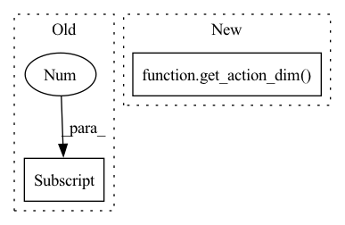

Pattern ID :10324
Before Change
net_arch = [400, 300]
self.obs_dim = self.observation_space.shape[0]
self.action_dim = self.action_space.shape[0]
self.net_arch = net_arch
self.activation_fn = activation_fn
self.net_args = {
"obs_dim": self.obs_dim,After Change
net_arch = [400, 300]
self.obs_dim = get_obs_dim(self.observation_space)
self.action_dim = get_action_dim( self.action_space)
self.net_arch = net_arch
self.activation_fn = activation_fn
self.net_args = {
"obs_dim": self.obs_dim,In pattern: SUPERPATTERN
Frequency: 3
Non-data size: 2
Instances Fragment ID: 36301455
Project Name: dlr-rm/stable-baselines3
Commit Name: 57b37513b64a593c7639f2ee4df759551e5996eb
Time: 2020-03-20
Author: antonin.raffin@ensta.org
File Name: torchy_baselines/td3/policies.py
M Class Name: TD3Policy
N Class Name: TD3Policy
M Method Name: __init__(13)
N Method Name: __init__(13)
M Parent Class: BasePolicy
N Parent Class: BasePolicy
M File Name: torchy_baselines/td3/policies.py
N File Name: torchy_baselines/td3/policies.py
M Start Line: 233
M End Line: 234
N Start Line: 234
N End Line: 235
Before Change
assert len(action_space.shape) == 1, "Error: the action space must be a vector"
if use_sde:
return StateDependentNoiseDistribution(action_space.shape[0], **dist_kwargs)
return DiagGaussianDistribution(action_space.shape[0] , **dist_kwargs)
elif isinstance(action_space, spaces.Discrete):
return CategoricalDistribution(action_space.n, **dist_kwargs)
// elif isinstance(action_space, spaces.MultiDiscrete):After Change
if isinstance(action_space, spaces.Box):
assert len(action_space.shape) == 1, "Error: the action space must be a vector"
if use_sde:
return StateDependentNoiseDistribution(get_action_dim( action_space) , **dist_kwargs)
return DiagGaussianDistribution(get_action_dim(action_space), **dist_kwargs)
elif isinstance(action_space, spaces.Discrete):
return CategoricalDistribution(action_space.n, **dist_kwargs) Fragment ID: 36301454
Project Name: dlr-rm/stable-baselines3
Commit Name: 57b37513b64a593c7639f2ee4df759551e5996eb
Time: 2020-03-20
Author: antonin.raffin@ensta.org
File Name: torchy_baselines/common/distributions.py
M Class Name: AnonimousClass
N Class Name: AnonimousClass
M Method Name: make_proba_distribution(3)
N Method Name: make_proba_distribution(3)
M Parent Class:
N Parent Class:
M File Name: torchy_baselines/common/distributions.py
N File Name: torchy_baselines/common/distributions.py
M Start Line: 498
M End Line: 499
N Start Line: 500
N End Line: 501
Before Change
if net_arch is None:
net_arch = [256, 256]
self.obs_dim = self.observation_space.shape[0]
self.action_dim = self.action_space.shape[0]
self.net_arch = net_arch
self.activation_fn = activation_fn
self.net_args = {After Change
net_arch = [256, 256]
self.obs_dim = get_obs_dim(self.observation_space)
self.action_dim = get_action_dim( self.action_space)
self.net_arch = net_arch
self.activation_fn = activation_fn
self.net_args = {
"obs_dim": self.obs_dim, Fragment ID: 36301457
Project Name: dlr-rm/stable-baselines3
Commit Name: 57b37513b64a593c7639f2ee4df759551e5996eb
Time: 2020-03-20
Author: antonin.raffin@ensta.org
File Name: torchy_baselines/sac/policies.py
M Class Name: SACPolicy
N Class Name: SACPolicy
M Method Name: __init__(12)
N Method Name: __init__(12)
M Parent Class: BasePolicy
N Parent Class: BasePolicy
M File Name: torchy_baselines/sac/policies.py
N File Name: torchy_baselines/sac/policies.py
M Start Line: 194
M End Line: 195
N Start Line: 195
N End Line: 196